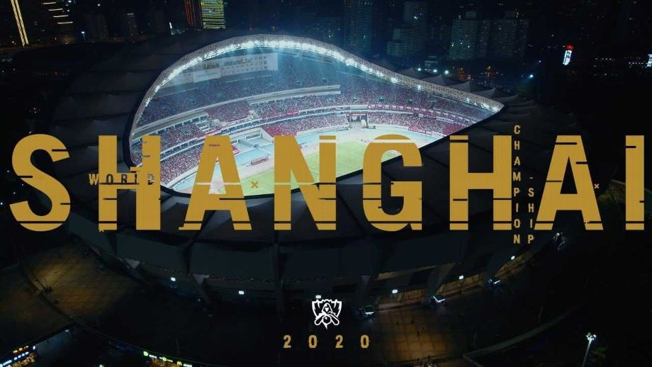
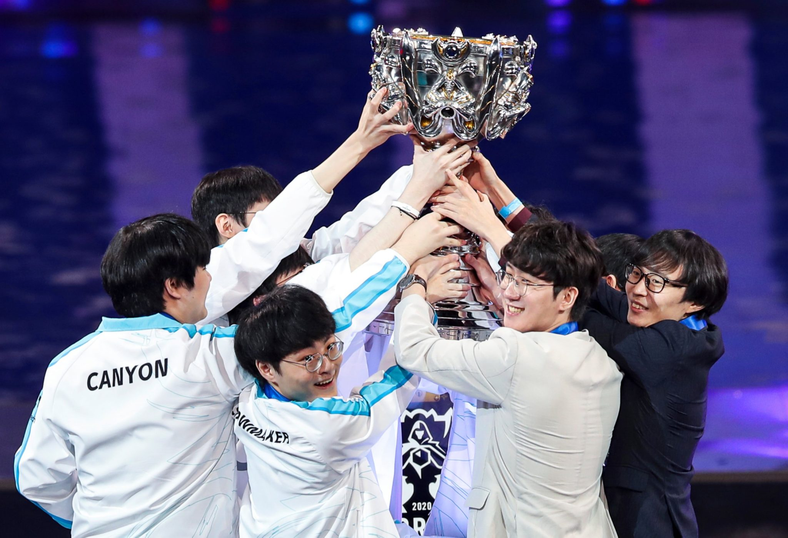
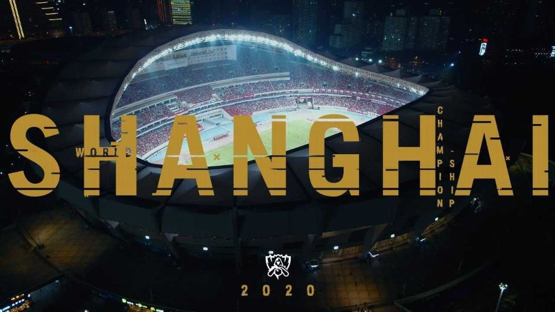
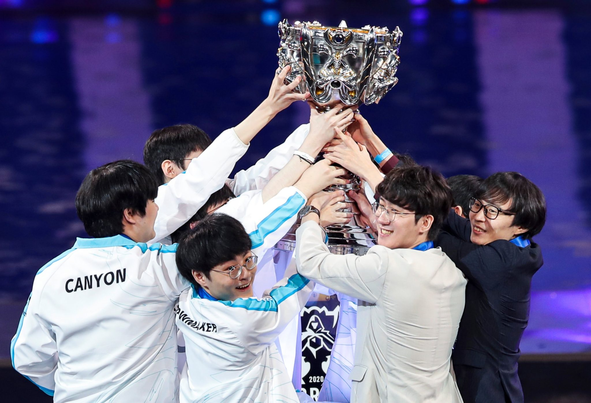

Les championnats du monde à huit clos!
Les Worlds 2020 sont la conclusion de la saison eSports 2020 de League of Legends . Le tournoi a eu lieu à Shanghai, en Chine dans le contexte très particulier du Covid. Longtemps incertain le tournoi a finalement eu lieux sans spectateur.
Cette année, encore une fois, le titre de champions du monde de League of Legends s'éloigne à nouveau des équipes européennes et le souvenir de la victoire de Fnatic en 2011 s'enfonce un peu plus dans l'oubli. La Corée du Sud et la Chine continuent inlassablement de s'échanger la Summoner's Cup, sans qu'aucune autre région ne puisse prétendre s'immiscer dans leur duel. L'Europe a frôlé de peu la catastrophe, Fnatic seul représentant en demi-finale a failli ne pas passer la phase poule, après 3 défaites sur les 3 premiers matchs ils réalisent un come-back monstrueux qui leur permet de signer une performance historique. Juste en dessous la rediffusion de la finale.
Le résumé en quelques images
/> 


